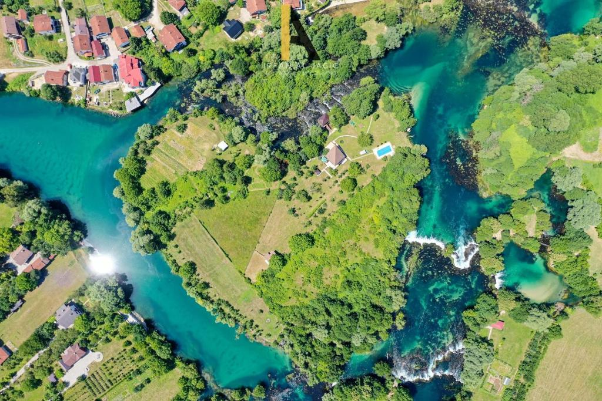

Bihać is a picturesque city located in the northwest of Bosnia and Herzegovina, known for its stunning natural beauty and rich history. Nestled along the banks of the Una River, the city offers breathtaking waterfalls, lush greenery, and a serene atmosphere. The Una National Park, one of the most beautiful in the country, attracts nature lovers, adventurers, and photographers.
Historically, Bihać has been an important cultural and strategic center, with influences from the Ottoman and Austro-Hungarian periods still visible in its architecture and heritage sites. The historic Captain's Tower and the Fethija Mosque are key landmarks that tell the city's long and diverse story.
Today, Bihać is a vibrant hub, offering a mix of traditional charm and modern amenities. With warm hospitality, delicious local cuisine, and numerous outdoor activities such as rafting, hiking, and sightseeing, Bihać is a must-visit destination for travelers looking to explore the natural and historical gems of Bosnia and Herzegovina.
